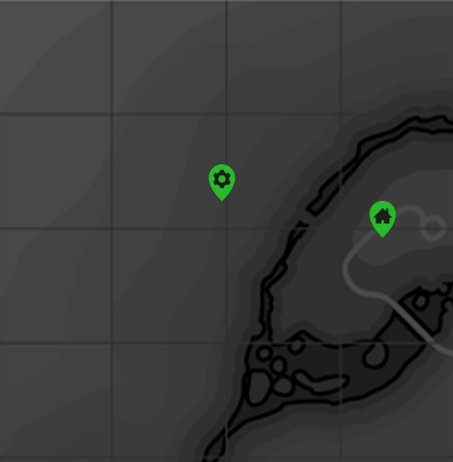

Fallout Cartographer
A Fallout 4 Reference Guide
Map
Tap a Location

This is a Prototype Application, it was created for Learning Purposes and will not be used outside of this purpose. All information regarding Fallout 4 cotent was gathered from Fallout_Wiki.com (2017)